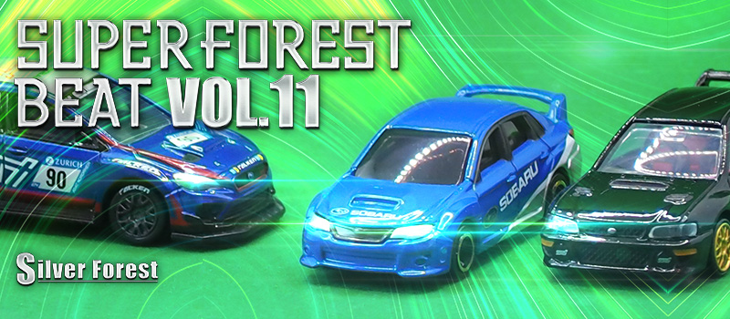

| |||||||||||||||||||||||||||||||||||||||||||||||||||||||||||||||||||||||||
|
| |||||||||||||||||||||||||||||||||||||||||||||||||||||||||||||||||||||||||
| TOP - BESTⅤ - BESTⅥ - Forest POP Party vol.00 - SFB vol.11 - About us - youtube - BOOTH - Twitter | |||||||||||||||||||||||||||||||||||||||||||||||||||||||||||||||||||||||||
|
■東方アレンジCD「Super Forest Beat VOL.11」 Super Forest Beat シリーズ 第11弾 12月25日(金) エアコミケ２ にあわせ委託ショップで頒布予定 | |||||||||||||||||||||||||||||||||||||||||||||||||||||||||||||||||||||||||
|
■ショップ委託はこちら↓  ■Super Forest Beat VOL.11 収録曲詳細 mp3試聴
| |||||||||||||||||||||||||||||||||||||||||||||||||||||||||||||||||||||||||